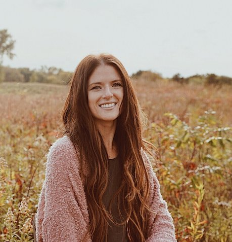

About Me
 I am a Minnesota based freelance photographer and web-developer. I am driven by my long running passion for capturing life's most precious and awe-inspiring moments. Whether on a client job or on my own free time, you can always find me with a camera in my hand and passion in my heart. My current motive has been to capture the authentic beauty in everyday surroundings. My hope is to develop and improve my craft while also leaving a trail of adventures and experiences that inspire people to get out of their comfort zones and see new things.